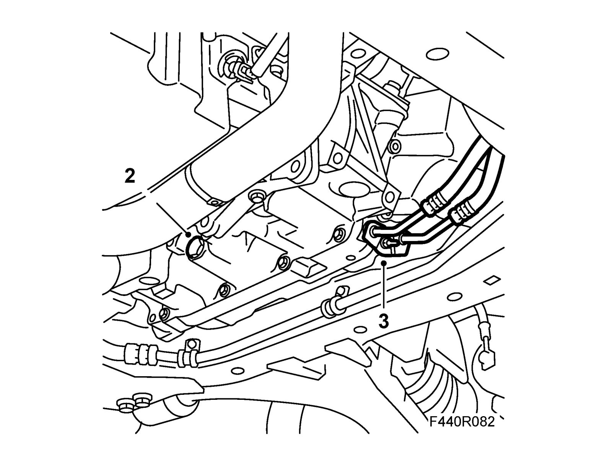
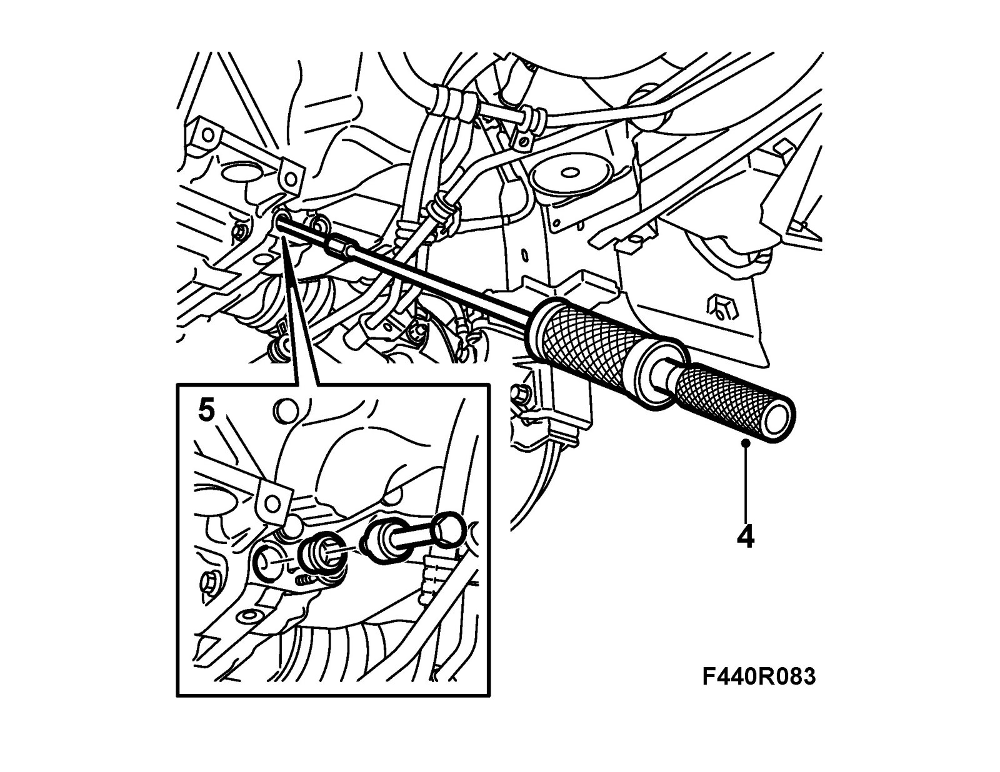
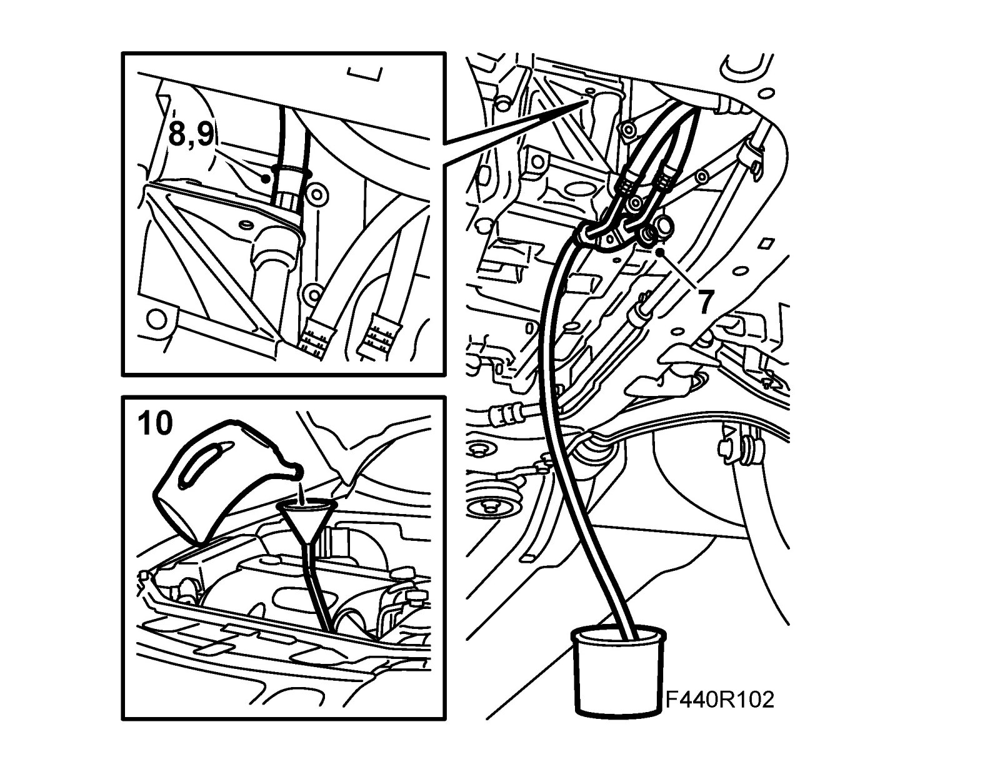

Changing the Transmission Fluid
Changing the transmission fluid1. Park the car on a lift. Engage P and apply the handbrake. If a track lift is used, block the wheels. CV: Remove Chassis reinforcement, front subframe, CV.
2. Place a receptacle under the car and drain the transmission fluid through the bottom plug. Refit the plug with a new seal. Use protective gloves.
Tightening torque 45 Nm (33 lbf ft)
Warning
The oil can be very hot if the car was recently driven. Risk of burn injuries.

3. Detach the oil cooler hose connections from the transmission.
4. Remove the seals from the transmission. Use 83 90 270 Sliding hammer and 87 92 319 Adapter, 3/8" - M10 and 87 92 756 Oil pipe puller.
Important
Take care that the sealing surfaces are not damaged.
5. Fit the new seals with 87 92 814 Fitting tool, oil pipe seal and lubricate the seals with Vaseline, non-acidic.
Important
The shoulder presses the hole in the seals when the hose connections are fitted.

6. Clean the pipe connections and connect a hose with 10 mm inside diameter to one of the pipe connections.
7. Fit the other pipe to the transmission coolant output. Fit the nut and a large washer for support. Do not tighten too hard.

8. Remove the dipstick and lower the car.
9. Connect the hose with 87 92 822 Oil filler funnel to the dipstick hole.
10. Fill with 4 liters of automatic transmission fluid as specified, see Weight, fluid capacity and grade of fluid.
Important
Fill up with oil through the oil filler hole. Do not remove any other plugs from the top of the gearcase.
11. Place the hose in a graduated receptacle that holds at least 2 l. Start the engine with the selector lever in P. Draw off 2 l of used fluid. Turn off the engine.
12. Fill with 2 l of new fluid in the transmission.
13. Start the engine in P and draw off 1 liter of old fluid. Turn off the engine.
14. Raise the car, remove the hoses and put back the dipstick.
15. Lubricate the hose connections with Vaseline and fit them to the transmission.
Tightening torque 6 Nm (4 lbf ft)
16. Lower the car. Engage P and start the engine. Fill with fluid to dipstick level "cold".
17. Connect Tech 2. Run the engine until the temperature reaches 80°C in menu "Read values" TCM.
18. Check the oil level and top up as needed. See Checking oil level. There is a difference of 0.5 l between the max and min line. CV: Fit Chassis reinforcement, front subframe, CV Checking the Transmission Fluid Level